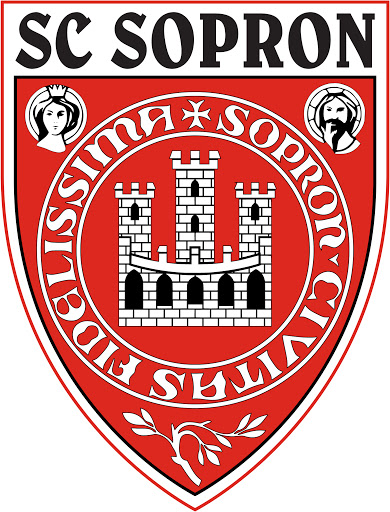
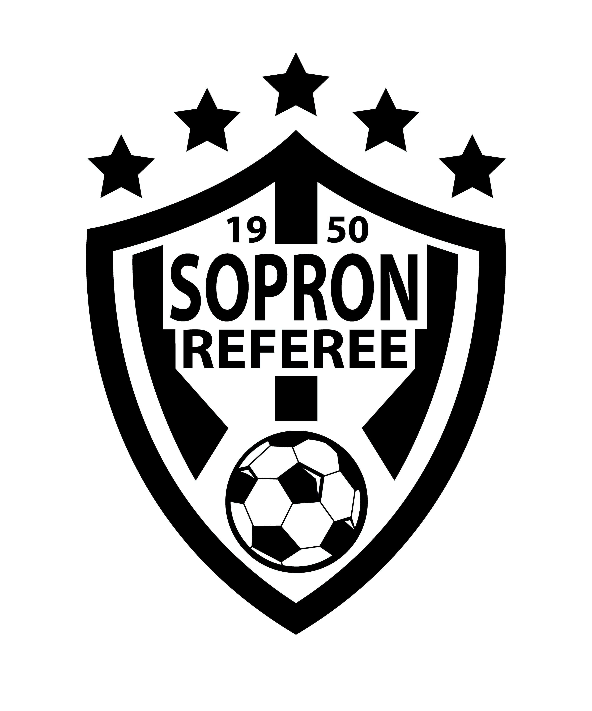

Kezdőlap |
Tanulmányaim |
Sport |
Sopron |
Elérhetőség |
| Labdarúgás Szüleim már óvodás koromban fociedzésre vittek és ezzel már részévé is váltam az SC Sopron egyesületének. Az
ovifocin már egy nagyon kedves edző megszerettette velem a sportot.
Több mint 10 évig voltam aktív tagja az egyesületnek, majd ekkor több
dolog is közbeszólt (tanulmányok stb.) emiatt meg kellett
hoznom a döntést, hogy az ilyen szintű aktív focit abbahagyom. Hobbi
szinten természetesen még most is nagyon szívesen játszok.
|
 |
|
| Játékvezetés Miután
az egyesületi labdarúgással felhagytam jelentkeztem játékvezetői
tanfolyamra, természetesen labdarúgás sportágban. Sikeres tanfolyam
után immáron 2 éve vezetek jelenleg még megyei mérkőzéseket, de
fiatalságomnak köszönhetően még bőven van lehetőségem feljebb kerülni.
A tanulmányaim mellett ezt a megpróbáltatást könnyebben tudom
teljesíteni mivel nincsenek hétköznap edzések csak a hétvégi meccsekre
kell koncentrálnom.
|
 |